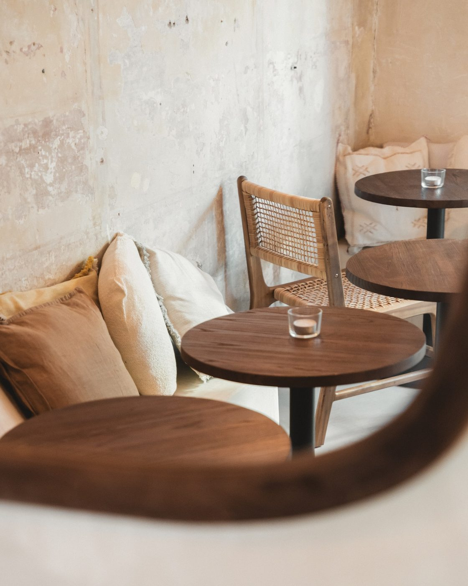

Clandestino
Mezcal · agrumes · fumée
12 €





Cocktailerie, numéros, spiritueux. Sept cocktails faits maison, cinq centilitres chacun, servis dans une petite place calme entre Notre-Dame du Mont et le Cours Julien.
Tout fait maison. La carte bouge quand Zak et Marine en ont envie.


Gin infusé au kelp, rhum Eminente, cachaça Aguacana, mezcal. Elles s'allument dans leurs niches en enduit, et on vous en sert cinq centilitres, pas un de plus.
« Bottles of kelp-infused gin are backlit behind a sleek, minimalist bar. »The New York Times — 36 Hours in Marseille
Ils réinventent les classiques et composent des élixirs maison. Les spiritueux viennent de loin, les produits viennent de près. Si votre cocktail vous laisse froid, on vous en fait un autre.
@labo_n.h →Mardi — Samedi
18h — 01h
Le labo pour vous. Trente personnes, une soirée.
The New York Times · BIG Marseille · Love Spots
© Labo N° Heure — Piste E « Chaux & Terre » · maquette